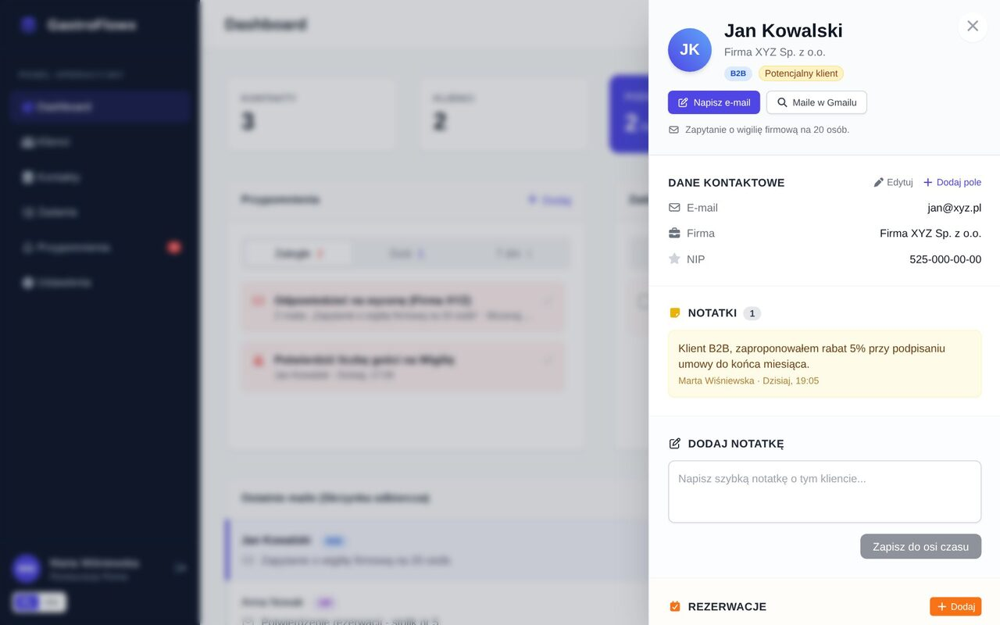

CRM dla restauracji prosto w Gmailu
Otwierasz maila od gościa, firmy cateringowej czy pary młodej – a obok wiadomości od razu widzisz kartę klienta: rezerwacje, zadania, przypomnienia i notatki całego zespołu. Bez przełączania się między programami.
Działa w przeglądarce Google Chrome na komputerze, z każdym kontem Gmail i Google Workspace. Link do instalacji rozszerzenia wysyłamy po kontakcie.

Wszystko o gościu w jednym miejscu
Restauracje żyją z relacji, a te rozsypują się po skrzynkach, zeszytach i arkuszach. GastroFlowx zbiera je tam, gdzie i tak pracujecie.
Co zyskuje Twoja restauracja
Proste narzędzie dla zespołu sali, eventów i biura – bez szkoleń i bez zmiany poczty.
Karta klienta przy mailu
Dane kontaktowe, kategoria (VIP, B2B, wesela), status, alergie i inne pola – widoczne obok otwartej wiadomości. Nowego nadawcę dodasz jednym kliknięciem.
Rezerwacje
Data, godzina, liczba gości, sala i okazja. Statusy od „nadchodząca” po „nie przyszli”, z przypomnieniem przed terminem.
Zadania zespołu
Follow-upy, oferty, degustacje i sprawy wewnętrzne na tablicy z terminami i przypisaniem do konkretnej osoby.
Przypomnienia i pulpit dnia
Co zaległe, co na dziś, co w tym tygodniu – zebrane w jednym widoku z najnowszymi mailami od klientów.
Historia i odpowiedzi
Oś czasu klienta: maile, notatki i zdarzenia. Mail otworzysz w Gmailu lub od razu odpowiesz – jednym kliknięciem.
Dopasowany do Ciebie
Własne kategorie, statusy, kolumny zadań i pola. Link do kalendarza (Google, Outlook, Apple) i interfejs po polsku lub angielsku.
Gotowe w kilka minut
Nie instalujesz programu ani nie przenosisz poczty. GastroFlowx to rozszerzenie przeglądarki, które dodaje CRM do Gmaila.
Zainstaluj rozszerzenie
Po kontakcie otrzymasz link do instalacji GastroFlowx w Chrome. Wystarczy jedno kliknięcie i przypięcie ikony na pasku przeglądarki.
Zaloguj się
Użyj konta otrzymanego od administratora restauracji. Logowanie pamięta się przez 30 dni.
Pracuj w Gmailu
Otwórz maila – karta klienta pojawi się obok. Pełny panel znajdziesz pod pozycją „GastroFlowx” w lewym menu.
Zaprojektowany do codziennej pracy


Dla całego zespołu restauracji
Każdy w zespole ma własne konto. Dane każdej restauracji są oddzielone od pozostałych.
Zespół restauracji
- karta klienta przy każdym mailu
- rezerwacje, notatki i oś czasu
- zadania przypisywane osobom z zespołu
- przypomnienia i pulpit dnia
- kategorie, statusy i pola restauracji
- własny kalendarz zadań
Pracownik i kierownik mają te same funkcje – rola oznacza tylko stanowisko w zespole.
Administrator
- restauracje i konta użytkowników
- licencje i przydział miejsc
- przedłużanie dostępu
- wylogowanie zgubionego urządzenia
Administrator zarządza systemem i nie korzysta z CRM w Gmailu.
Twoje dane pod kontrolą
Projektując GastroFlowx, zbieramy tylko to, co potrzebne do pracy z klientami – i nic więcej.
Szyfrowane połączenia
Cała komunikacja odbywa się przez HTTPS, a hasła przechowujemy wyłącznie jako skróty kryptograficzne.
Serwery w Polsce (UE)
Dane przetwarzamy zgodnie z RODO. Każda restauracja widzi wyłącznie własne dane.
Tylko potrzebne informacje z Gmaila
Zapisujemy temat, nadawcę, datę i krótki fragment maili od klientów z CRM. Nie zapisujemy pełnej treści ani załączników.
Bez reklam i sprzedaży danych
Nie sprzedajemy danych i nie używamy ich do reklam. Szczegóły w polityce prywatności.
Najczęstsze pytania
Czy muszę zmieniać skrzynkę pocztową?
Nie. GastroFlowx działa w Twoim obecnym Gmailu – zarówno na kontach @gmail.com, jak i w Google Workspace (np. @twojarestauracja.pl).
Czy działa na telefonie?
GastroFlowx to rozszerzenie przeglądarki Google Chrome na komputer (Windows, macOS, Linux, ChromeOS). Na telefonie korzystasz z Gmaila jak dotąd; dane z CRM czekają na Ciebie przy komputerze.
Czy cały zespół widzi te same dane?
Tak. Klienci, notatki, rezerwacje i zadania są wspólne dla całej restauracji, a każda osoba ma własne konto – wiadomo, kto dodał notatkę i komu przypisano zadanie.
Ile osób może korzystać z systemu?
Tyle, ile miejsc obejmuje licencja restauracji. Liczbę miejsc można w każdej chwili zwiększyć.
Czy mogę dopasować kategorie i statusy do swojej restauracji?
Tak. W ustawieniach dodasz własne kategorie klientów, statusy, kolumny zadań i pola (np. alergie, NIP, ulubiony stolik).
Czy zadania trafią do mojego kalendarza?
Tak. Każdy użytkownik może utworzyć prywatny link kalendarza i dodać go do Google Calendar, Outlooka lub kalendarza Apple.
Co się dzieje z danymi po rezygnacji?
Na prośbę restauracji przekażemy eksport danych, a po zakończeniu umowy usuniemy je w ciągu 30 dni – zgodnie z polityką prywatności.
Chcesz wdrożyć GastroFlowx w swojej restauracji?
Napisz do nas – przygotujemy konto restauracji i licencję dla zespołu, wyślemy link do instalacji rozszerzenia i pomożemy w pierwszej konfiguracji.